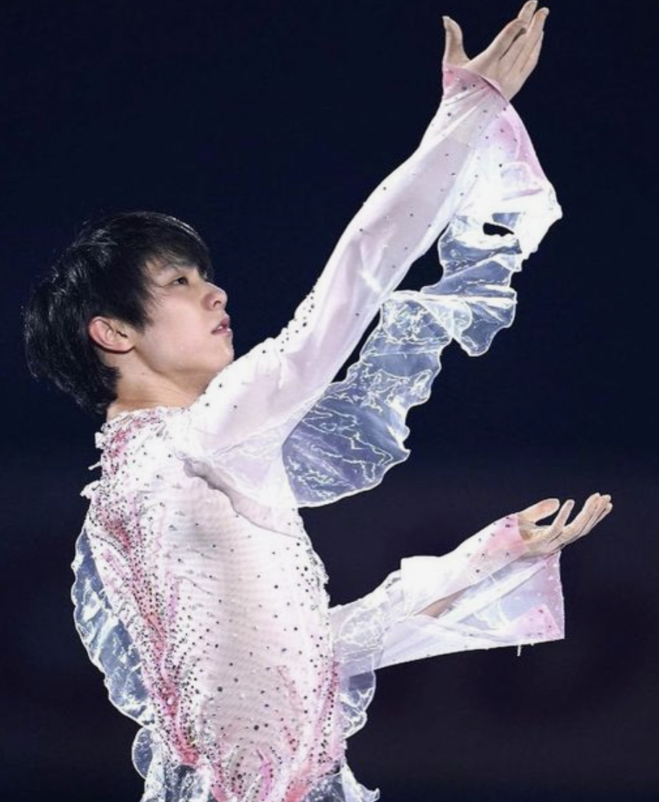

Yuzuru Hanyu’s Haru yo, Koi is a poignant piece with an eloquent message about the fleeting beauty of life. Of course, any discussion of the choreographic meaning of Haru Yo, Koi cannot be separated from the title of the piece itself. Haru, yo Koi, or May Spring Come, is a song originally sung by Matsutoya Yumi in which the lyrics express a yearning for spring's arrival. The theme of spring is undoubtedly central to Yuzuru’s piece, as his cascading costume is reminiscent of cherry blossoms in full bloom during the spring.
 a cascading pink costume reminiscent of cherry blossomsIn Japanese culture, cherry blossoms are ripe with symbolism. While in full bloom, cherry blossoms are spectacularly vivacious. However, their existence is short-lived and fleeting as they fall to the earth merely two weeks after blossoming. Hence, cherry blossoms symbolize the ephemerality of life.
Yuzuru’s piece masterfully develops the symbolic meaning of cherry blossoms through utilizing choreographic elements and gestures. There are mainly three distinct sections to Yuzuru’s piece. The beginning starts with the tranquil music as Yuzuru glides through the ice. In this section, it is as if spring has just arrived. The choreographic elements mirror the tranquility of the music. There are almost no jumps until the very end of this section. One recurring choreographic element is his outstretched arms, as if he is reaching towards the cherry blossoms in full bloom around him.
The music is tranquil; it is as if spring has just come. Yuzuru reaches out towards the blossoms.The tranquil music then comes to a rest and we transition to the second section of the piece where the music takes on a more melancholic tone. Yuzuru briefly comes to a still as he gazes solemnly into a distance. This seems to be the beginning of a realization that the blossoms will soon fall and that the beauty of the blossoms are not eternal.
The transition between the first and second section. The beginning of the realization of the transience of cherry blossoms.The music takes a more distressed turn and this is mirrored in the quality of Yuzuru’s movements. In contrast to the smooth arm movements in the first section, the second section features sharper and more desperate movements. Yuzuru streches his hand out into the air, almost as if he is trying to grab onto the cherry blossoms.
The choreography uses sharp and desparate movements. Yuzuru attempts to hold onto the falling blossoms.However, at the climax of his desperation, we enter into the third section where the music takes another abrupt shift as it turns from distressed to an almost triumphant tone. The third section features the famous choreographic element in which Yuzuru gathers the ice in his hand and then throws it up into the air.
The climax of the piece: Yuzuru throws up the ice into the air.Here, this is a tremendous paradigmatic shift in meaning. In previous sections, Yuzuru desparately reaches for the blossoms in an effort to hold onto them. In this section, he picks up the blossoms(which is metaphorically represented by the ice), but he also lets go of them.
As we move to the conclusion of the piece, the piano features a series of notes trailing downwards, evoking an imagery of blossoms spiralling down to the earth. Yuzuru leans back with outstretched arms as if he is watching and admiring the falling blossoms.
The piano spirals into a series of downwards notes. Yuzuru leans back to admire the falling blossoms.There is a deeply metaphorical and poignant meaning to this all. For much of the piece, Yuzuru attempts to hold onto the fleeting beauty of the cherry blossoms. In his desperation, he resists the temporality of the cherry blossoms. But in the end, he lets go of the cherry blossoms as he realizes that it is meaningless to hold onto them. Rather, he willingly relinquishes the blossoms and embraces their ephemerality as he admires their full bloom and fall.
Life, too, is fleeting.
But although the beauty of life is fleeting, that is all the more reason to love it while it is in full bloom.